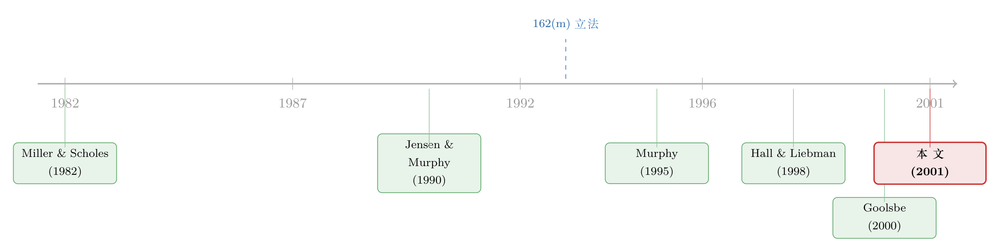

国会想给天价高管降薪，结果亲手抬高了它
本文读的是 Perry & Zenner (2001, Journal of Financial Economics)：1992–1993 年美国 SEC 强化了高管薪酬披露、国会又用税法第 162(m) 条限制了「百万美元以上、非绩效挂钩」薪酬的可抵扣性。作者用 ExecuComp 的大小样本证据告诉你——这套监管没能压住薪酬总额（反而一路飙升），却实实在在地改写了契约的结构：薪资增长在百万门槛附近被摁住，奖金、总薪酬与 CEO 财富对股价的敏感度在 1993 年之后显著上升。换句话说，国会想做的事（降薪）没做成，没想做的事（提高激励强度）反倒做成了。
1 一个想给富人降薪的法律，最后做了什么
1993 年，美国国会做了一件在政治上极其讨巧的事：它在《综合预算调节法案》里塞进了一条《国内税收法》第 162(m) 条（Internal Revenue Code Section 162(m)，下称 162(m)）。这条法律的措辞很直白——上市公司支付给 CEO 等高管的、非绩效挂钩的薪酬，超过一百万美元的部分，公司不得再用来抵税。
国会的算盘写在众议院筹款委员会的报告里，几乎是赤裸裸的：「委员会相信，如果把（非绩效挂钩的）薪酬抵扣限制在每年一百万美元，过高的薪酬就会被压下去。」注意这句话的潜台词——他们要的不是税收（按 162(m) 起草时的官方测算，1994–1998 年它一共只能多收 $335 million 的税，相比之下同期把商务餐饮抵扣从 80% 砍到 50% 预计能进账 $15.4 billion，前者连个零头都算不上），他们要的是改变行为。
于是一个尖锐的问题摆在所有研究者面前：监管真的能改变薪酬契约吗？还是说，公司只会把契约重新化个妆，经济实质纹丝不动？
这正是 Perry 和 Zenner 想回答的。而他们最终交出的答卷，带着一个漂亮的反转：降薪这件事，国会基本失败了；但它在无意之间，给一整代 CEO 的薪酬装上了更紧的「绩效弹簧」。
2 先看大账：薪酬不仅没降，还在加速上涨
要讲清这个反转，得先把最朴素的事实摆出来。作者的第一个命题（Proposition 1）几乎是替国会立的 flag：
命题 1：在 162(m) 与 SEC 披露规则出台之后，CEO 薪酬水平下降。
结果呢？用 CPI 平减到 1992 年不变价之后，1992–1997 年间几乎每一个薪酬组成部分都在大涨。中位数薪资（salary，被认为是最不挂钩绩效的那一块）涨了 17%；奖金、长期激励计划（LTIP）派发、限制性股票（restricted stock）授予几乎都翻了一倍；而期权授予的现值，在这几年里翻了三倍。总薪酬中位数从 1992 年的约 $1.08 million 一路涨到 1997 年的 $1.81 million。
这就是麻烦所在。如果你只盯着「薪酬总额」这把尺子，结论会简单得令人沮丧：监管完全失败，甚至像是火上浇油。
但真正会读论文的人，到这里应该停一下，问一个更细的问题：全样本不降，不代表「该被管住的那群人」也不降。 162(m) 直接针对的，本来就只是薪资逼近或超过百万的那一小撮公司——样本里大约只有一半的公司现金薪酬过百万，对另一半来说，这条法律压根不咬人。
3 把镜头推近：百万门槛附近，到底发生了什么
于是作者把全样本切开，专门去看薪资水平的横切面。这是全文最见功力的一步。
首先，是一组朴素到不能再朴素的频数统计（命题 2A）。把公司按上一年的 CEO 薪资分成六档，数一数每一档里有多大比例的公司在 1993 年后给 CEO 涨了薪。结论一目了然：在 $900,000 以下的各档里，75%–84% 的薪资在涨；可一旦跨过 $1,000,000，涨薪比例骤降到 37%–72%，尤其是恰好卡在一百万到一百一十万这个区间的公司，最不愿意涨薪。
换句话说，越是逼近那道百万红线，公司的手越紧。这不是偶然——这正是 162(m) 在「门槛」处划出的一道折痕。
接着，一个自然的问题是：这些把薪资从百万以上砍回到一百万及以下的公司，到底是因为业绩不好（本来就该降），还是真的因为 162(m)？毕竟「高薪回落」也可能只是均值回归（reversion to the mean）。
作者的处理方式干净得让人佩服：他们锁定了 1992–1996 年间薪资曾经超过百万的 164 家公司，其中有 44 家在次年把 CEO 薪资降到了一百万或以下。然后——这是关键——他们一家一家去翻代理声明书（proxy statement）里的薪酬委员会报告，看公司自己怎么解释这次降薪。
结果是这样的：44 家里有 19 家是因为 CEO 换人（turnover）。剩下的 25 家中，只有 1 家把降薪明确归因于业绩不佳，却有 23 家白纸黑字提到了 162(m)。比如 Iowa Beef Processors 的薪酬委员会就直说：CEO 的基本工资从 $1,240,000 降到 $1,000,000，「这些举措是基于 162(m) 条款的变化……以便公司能就联邦所得税进行抵扣」。
这就把均值回归的解释基本排除了——公司是奔着 162(m) 去降薪的。命题 2B 成立。
但故事如果到这里就结束，那它顶多算「监管局部有效」。真正的反转，藏在下一步。
4 反转：被摁下去的薪资，从「另一扇门」涨了回来
然后，作者追问了一个绝大多数人会忽略的问题：那些被降了薪的 CEO，总薪酬真的少了吗？
答案是：通常没有。把薪资砍到百万以下，并不会让这些 CEO 的总薪酬随之下降——少掉的固定工资，被奖金、期权、限制性股票这些绩效挂钩的部分补了回来，甚至补得更多。
到这里，那个漂亮的反转才算真正浮出水面：162(m) 没有让 CEO 少拿钱，它只是改变了 CEO 拿钱的「方式」。 法律把「非绩效薪酬」的成本抬高了，理性的董事会于是顺势把薪酬的重心，从不可抵扣的固定工资，挪向了可抵扣的绩效薪酬。
而这恰恰带来了一个国会从未明说、却意义深远的副作用——薪酬对业绩的敏感度上升了。
作者用命题 4 把这件事钉死：对所有公司、尤其是受 162(m) 影响的公司而言，1993 年之后，奖金与总薪酬对当期和滞后股票回报的敏感度都显著上升了。而且作者特别强调，这种上升不是牛市里期权自动升值的机械效应——他们控制掉了这一点。命题 5 则补上最后一块拼图：绩效敏感的组成部分，特别是股票期权授予，在 1993 年后占总薪酬的比重越来越大。
5 不止于「年度薪酬」：财富—业绩敏感度也变陡了
读到这里，一个挑剔的读者应该会皱眉：你说的「敏感度上升」，量的都是董事会每年发出去的那笔年度流量（annual flow）。可 Jensen 和 Murphy 早就提醒过——CEO 真正的激励，绝大部分来自他手里已经持有的股票和期权，而不是今年新发的那点钱。
作者显然预判到了这一点，于是在论文的后半段，把尺子从「年度薪酬」换成了「CEO 财富对股东财富的敏感度」。他们沿用 Hall 和 Liebman 的做法，计算所谓的 Jensen-Murphy 统计量，又称分享率（sharing rate）：
$$ \text{sharing rate} = \frac{\Delta(\text{CEO wealth})}{\Delta(\text{firm value})\big/\$1{,}000} $$
直白地说，就是股东财富每变动 $1,000，CEO 自己的身家跟着变动几美元。Jensen 和 Murphy 当年算 1970–80 年代的数字，低得让人怀疑 CEO 到底有没有动力替股东卖命。而作者算出来的 1996 年中位数分享率，依子样本不同，落在 $7 到约 $25 之间——明显高于 Jensen-Murphy 时代，印证了 Hall-Liebman「1990 年代敏感度大幅提高」的发现。
更要紧的是，在回归框架里控制掉其他影响 CEO 激励的因素之后，作者发现：从 1993 到 1996 年，对那些逼近百万门槛、即受 162(m) 影响的公司，财富—业绩敏感度出现了上升。 这就说明，监管带来的结构变化，不只停留在董事会每年那笔账面流量上，而是真真切切地改变了 CEO 身家与公司价值的捆绑程度——产生了超越年度薪酬的经济影响。
这里有一个常被误读的点：监管的「成功」与「失败」，取决于你拿哪把尺子量。用「薪酬总额」量，162(m) 是个笑话；用「契约结构」和「激励强度」量，它却悄悄完成了一次远比降薪深刻的改造。一条想省钱的法律，最终干的是公司治理的活儿。
6 识别策略：没有干净的断点，但有一群「自证供词」
必须坦白：这不是一篇靠某个外生冲击做出干净因果识别的论文。162(m) 是一刀切地砸向所有上市公司的联邦法律，没有天然的对照组，作者自己也承认——可比的「监管前」数据只有 1991、1992、1993 三年，这削弱了检验的功效（power）。
那它凭什么让人信服？靠的是三条互相印证的证据链，外加一个聪明的「自我识别」设计。
第一，作者用「百万门槛附近 vs. 远低于门槛」的横截面差异，构造出一种近似的处理—对照对比：法律只咬高薪公司，所以如果在门槛附近看到薪资增长被摁住、而低薪档没有，这种差异本身就是 162(m) 在起作用的指纹（关于把「门槛」当作识别来源的思路，可参见《加息真正掐断的，是那条「过线」的房贷》）。
第二，也是最有意思的一招——他们去读公司自己写的降薪理由。当 25 家降薪公司里有 23 家在代理声明书里主动招认「我们是为了 162(m)」，而只有 1 家说「业绩不好」时，均值回归这个最大的竞争性解释就被按在了地上。这相当于让被研究对象自证供词，是处理这类无对照组监管事件时一种相当务实的识别策略。
为稳健起见，作者还用了三种不同方式定义「百万美元公司」（million-dollar firms）：一是上一年薪资是否过百万（连续刻度）；二是薪资是否超过 $900,000 的指示变量；三是 1992–1997 年间现金薪酬是否至少有一次过百万。三种定义下结论定性一致。
7 文献脉络
要看懂这篇论文站在哪里，得先把这条研究线捋一遍。
最早，是把目光投向「税」的那批人。Miller 和 Scholes (1982)、Hite 和 Long (1982) 就指出，个人税与公司税的差异本身就会影响薪酬契约的设计，至少有「装点门面」（cosmetic）的效果——这埋下了「税法能改变薪酬」的第一颗种子。
接着，是激励契约的奠基性发问。Jensen 和 Murphy (1990) 那篇名作算出 1970–80 年代的薪酬—业绩敏感度低得惊人，几乎在质问：CEO 到底有没有被「像所有者一样」激励？这成了整个领域的母题。
然后，监管与政治的视角进来了。Joskow、Rose 和 Shepard (1993) 研究了管制对 CEO 薪酬的约束，Murphy (1995) 则把 1992 年 SEC 的代理改革解读为对公众舆论与参议院提案的政治回应——薪酬不再只是经济问题，更是政治问题。

再后来，是「敏感度真的变了吗」这一轮。Hall 和 Liebman (1998) 用更长的样本证明，薪酬—业绩敏感度自 1980 年代初以来大幅上升，并在他们样本的最后三年（1992–1994）出现「惊人的加速」，于是宣告「CEO 不再像官僚一样拿钱」。Goolsbe (2000) 则从高管薪酬里读出富人对税率的真实反应。
Perry 和 Zenner (2001) 正卡在这两条线的交汇点上：他们要回答的，恰恰是 Hall-Liebman 看到的那场「加速」里，有多少是 162(m) 这只看得见的手推的。这也呼应了与他们几乎同时的 Rose 和 Wolfram (2000)——后者同样在问「能不能用税法去拨动 CEO 薪酬」。
8 评论与延伸（Q&A + 研究方向）
(a) 几个可能的疑问
Q：薪酬总额一路涨，凭什么说 162(m) 「有效」？这不是自相矛盾吗？
不矛盾，因为「有效」要看目标。国会的明示目标（降薪）确实落空了——1990 年代本就是 CEO 薪酬、尤其是期权授予的大爆发期，这股浪潮远比一条税法强大。但 162(m) 真正改写的是契约结构：它抬高了非绩效薪酬的相对成本，于是钱从固定工资流向了绩效薪酬。监管在「方式」上赢了，在「总量」上输了。
Q：23 家公司说自己是为了 162(m) 降薪，可这是它们的「自我陈述」，会不会只是说漂亮话？
这是个公允的质疑。代理声明书里的措辞确实有自利和印象管理的成分（Murphy 1996 就发现管理者会挑能压低报告薪酬的口径）。但反过来想：如果真正原因是业绩差，公司没有动机谎称是税务原因；而 162(m) 是个中性的、合规色彩的理由，主动招认它的成本很低。23 比 1 这个悬殊比例，配合门槛附近的横截面证据，已经很难用「只是嘴上说说」来解释。
Q：敏感度上升，会不会只是牛市里期权自动升值的假象？
作者专门防了这一手。他们强调奖金与总薪酬对股票回报敏感度的上升，不是期权价值随大盘机械上涨造成的；财富—业绩敏感度的回归里也控制了其他激励因素。所以这是契约设计变陡，而非市场水位上涨的副产品。
Q：既然 162(m) 多收的税少得可怜（五年才 $3.35 亿），公司为什么要当回事？
恰恰因为重点从来不在那点税。一项 Towers Perrin 调查显示，
87%的公司打算为了「正面的股东关系」去做 162(m) 合规，只有43%提到税务考虑重要。也就是说，162(m) 叠加 SEC 的强化披露，制造的是一种声誉与治理压力——董事会怕的不是补税，是被股东和媒体盯上「给非绩效薪酬开后门」。
Q：这篇论文的因果识别到底站不站得住？
诚实地说，它没有断点回归或双重差分那种干净的外生冲击——162(m) 砸向所有公司，没有天然对照组，可比的监管前数据又只有三年。它的说服力来自证据的收敛：横截面门槛差异、公司自证供词、三种定义下的稳健性，三条线指向同一结论。这在「全市场监管事件」这类天生难识别的题目里，已属上乘，但它更接近「强有力的描述性证据」而非铁板钉钉的因果。
Q：对「高管薪酬该不该管」这场老争论，本文站哪边？
它给了双方都能引用的弹药。批评监管者会说：看，想降薪反而越降越高，典型的好心办坏事。但更细致的读法是：监管未必能控制价格（薪酬水平），却能改变契约形态（激励结构），而后者可能才是公司治理真正在乎的东西。监管的作用是「重塑」，不是「压制」。
(b) 几个可能的研究问题与提案
1. 把 162(m) 的「门槛」做成真正的断点回归。
【经济故事】162(m) 在
$1,000,000处划出一条清晰的法定红线，门槛两侧的公司在可抵扣性上待遇骤变，这是天然的断点设计。本文用的是分档频数和回归，没有把这条线当作 RDD 的 running variable 充分榨干。 【可行性】中。ExecuComp 数据公开可得，断点变量（上年薪资距百万的距离）干净。难点在于薪资是公司可操纵的「分配变量」，存在围绕门槛的精确操纵（bunching）——但这本身又可以用 McCrary 密度检验做成一篇关于「操纵行为」的文章。doable，且角度新。
2. 162(m) 之后的「风险转移」：绩效薪酬变多，CEO 冒险变多了吗？
【经济故事】期权和绩效奖金占比上升，理论上会放大 CEO 的风险偏好（凸性收益）。如果 162(m) 系统性地把薪酬推向绩效组件，它会不会顺带抬高了受影响公司的投资波动、杠杆或研发赌注？这是一条监管「未预期后果」的暗线。 【可行性】高。把本文的「受影响公司」划分与 Compustat 的投资/杠杆/波动率指标对接即可，识别可沿用门槛附近的差异。
3. 把视角搬到债权人：绩效薪酬上升，公司债利差怎么动？
【经济故事】股东乐见 CEO 激励变陡，债权人却可能因风险转移而不安。162(m) 引发的薪酬结构变化，是否在受影响公司的债券利差或评级上留下痕迹？这把高管薪酬与信用市场连了起来（思路上可参见《老板的工资条，谁说了算？》与《governance-mechanisms-and-bond-prices》）。 【可行性】中。需要把 ExecuComp 薪酬结构与 TRACE/评级数据合并；样本期偏早（1990 年代），TRACE 要到 2002 年后才有，需用更早的债券价格源或评级变动替代，数据衔接是主要障碍。
4. 162(m) 二十年后的「合规演化」：从避税到 2017 年废除例外。
【经济故事】2017 年《减税与就业法案》取消了 162(m) 的绩效薪酬例外，等于把本文记录的那套「绕道」逻辑一夜抹平。比较 1993 年引入例外与 2017 年取消例外两次冲击下的薪酬结构反应，能干净地识别出「可抵扣性」这一个杠杆的因果方向。 【可行性】高。两次相反方向的政策变动构成准自然实验，ExecuComp 覆盖完整，是一个现成的「政策开关」研究。
5. 外资持有人会不会放大 162(m) 的治理效应？
【经济故事】本文把 162(m) 的真正力量归于声誉与股东压力，而非税。那么股东构成就该 matter——机构、尤其是治理诉求强的外资持有人占比更高的公司，是否对 162(m) 反应更剧烈、契约重构得更彻底？ 【可行性】中。需 13F 与外资持股数据匹配薪酬样本，识别上用持股构成做横截面异质性分析；内生性（谁选择持有谁）需用持股的外生变动（如指数纳入）来缓解。
9 我的判断
这篇论文最大的贡献，是把一个看似简单的政策评估问题，从「监管成功了吗」升级成了「监管改变了什么」。它没有被「薪酬总额照涨不误」这个表面失败带跑，而是耐心地把镜头推到百万门槛附近，又罕见地一家家去读公司自己写的降薪供词——这种「大样本统计 + 手工读 proxy」的混合打法，在 2001 年是相当扎实的。结论也站得住：162(m) 没降薪，却让薪酬契约变得更绩效挂钩、让 CEO 财富与股价捆得更紧。
对识别，我的担忧是诚实而具体的：全市场一刀切的法律天生缺对照组，可比的监管前数据又只有三年，所以本文本质上是强有力的描述性证据 + 自我陈述的佐证，而非干净的因果。门槛附近的薪资也是高度可操纵的分配变量，围绕红线的 bunching 既可能污染识别，也可能是另一篇文章的金矿。
我接下来最想看到的，是有人用 2017 年取消 162(m) 例外这一反向冲击，去验证本文的因果方向：如果可抵扣性真是那只手，那么当例外消失时，绩效薪酬占比应该出现可观测的回落。两次方向相反的政策开关合在一起，才能把「税法能不能拨动 CEO 薪酬」这个问题，从「看起来是」推到「确实是」。
参考文献
- Goolsbe, A. (2000). What happens when you tax the rich? Evidence from executive compensation. Journal of Political Economy 108, 352–378.
- Hall, B., & Liebman, J. (1998). Are CEOs really paid like bureaucrats? Quarterly Journal of Economics 113, 653–691.
- Hall, B., & Liebman, J. (2000). The taxation of executive compensation. In: Poterba, J. (Ed.), Tax Policy and the Economy, Vol. 14. NBER & MIT Press, Cambridge, MA, pp. 1–44.
- Hite, G., & Long, M. (1982). Taxes and executive stock options. Journal of Accounting and Economics 4, 3–14.
- Jensen, M. C., & Murphy, K. J. (1990). Performance pay and management incentives. Journal of Political Economy 98, 225–264.
- Joskow, P., Rose, N., & Shepard, A. (1993). Regulatory constraints on CEO compensation. Brookings Papers on Economic Activity: Microeconomics 1, 1–58.
- Livingstone, J. R. (1997). Executive compensation contracting and responses to increased tax costs. Working paper, Pennsylvania State University.
- Miller, M., & Scholes, M. (1982). Executive compensation, taxes, and incentives. In: Cootner, C., & Sharpe, W. (Eds.), Financial Economics: Essays in Honor of Paul Cootner. Prentice-Hall, Englewood Cliffs, NJ, pp. 179–201.
- Murphy, K. J. (1995). Politics, economics, and executive compensation. University of Cincinnati Law Review 63, 713–748.
- Murphy, K. J. (1996). Reporting choice and the 1992 proxy disclosure rules. Journal of Accounting, Auditing and Finance 11, 497–515.
- Perry, T., & Zenner, M. (2001). Pay for performance? Government regulation and the structure of compensation contracts. Journal of Financial Economics 62(3), 453–488.
- Rose, N., & Wolfram, C. (2000). Regulating executive pay: using the tax code to influence CEO compensation. NBER working paper.